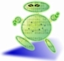

| Revision | $Revision$ |
|---|---|
| Date | $Date$ |

The package org.beedraz.semantics_II contains the core framework of Beedraz. The core framework consists of 3 interconnected parts:
These parts are gathered in one package, org.beedraz.semantics_II, because they mutually dependent, and use package accessible methods to communicate.
Subpackages are used for parts of Beedraz that are not mutually dependent on beeds, notification and update, and edits.
What is general about beeds is defined in the interface {@link org.beedraz.semantics_II.Beed}. In code, what is general to beeds, is only support for the notification and update framework. Other common points are only on the level of design, patterns and idioms, and are described in the documentation of {@link org.beedraz.semantics_II.Beed}. There are no other interfaces in the general beed framework.
In {@link org.beedraz.semantics_II.AbstractBeed}, most of the methods defined in {@link org.beedraz.semantics_II.Beed} are implemented. {@link org.beedraz.semantics_II.AbstractDependentBeed} adds support for beeds that depend on other beeds (operands) for their semantic state.
BeedMapping.java
BeedFilter.java
AbstractUpdateSourceDependentDelegate.java
AbstractEditableBeed.java
Beeds implement the classic Model - View -Controller (a.k.a. Oserver - Observable, a.k.a. MVC) design pattern with {@link org.beedraz.semantics_II.Listener}. To update dependent beeds, a topological algorithm is needed. This is implemented using {@link org.beedraz.semantics_II.Dependent}. A separate document describes the need for the topological algorithm, and the implementation.
The exact nature of a change is communicated to {@link org.beedraz.semantics_II.Listener Listeners} and {@link org.beedraz.semantics_II.Dependent Dependents} using an {@link org.beedraz.semantics_II.Event}. {@link org.beedraz.semantics_II.Event} is an interface, because multiple inheritance is needed for events. {@link org.beedraz.semantics_II.AbstractEvent} holds the implementations of the interface methods that are common for all events. {@link org.beedraz.semantics_II.OldNewEvent} is an often used kind of event, that can be used where the change is easily described as the state before the change (old) and the state after the change (new), if the state is a simple object reference. {@link org.beedraz.semantics_II.ActualOldNewEvent} is an implementation of {@link org.beedraz.semantics_II.OldNewEvent} that can be used directly.
{@link org.beedraz.semantics_II.TopologicalUpdate} contains the topological update algorithm in static methods. The Beedraz code supports a limited form of profiling of the topological update algorithm. Timing information is gathered in {@link org.beedraz.semantics_II.TopologicalUpdateTiming}.
{@link org.beedraz.semantics_II.Edit Edits} are the reified form of mutators in Beedraz. Core semantic state of editable beeds cannot be changed directly via mutators in Beedraz, but has to be changed through {@link org.beedraz.semantics_II.Edit Edits}. {@link org.beedraz.semantics_II.Edit Edits} implement the classic Action design pattern. TODO CHECK LINK They are also the core support for undoability.
{@link org.beedraz.semantics_II.Edit Edit} is a class, and not an interface, because package accessible methods are required. The core edit protocols (perform, undo, redo) are implemented as template methods in {@link org.beedraz.semantics_II.Edit}, with limited genericity useful for users. Genericity that is interesting for implementation reasons is implemented in {@link org.beedraz.semantics_II.AbstractEdit}. {@link org.beedraz.semantics_II.AbstractSimpleEdit} adds support for edits for editable beeds that express their semantic state as a simple, single reference.
ValidityListener.java
UpdateSourcesGraph.java
IllegalEditException.java
EditStateException.java
EditException.java
Edit.java
CompoundEdit.java
Copyright 2007 - $Date$ by the Beedraz authors.
Licensed under the Apache License, Version 2.0 (the "License"); you may not use this file except in compliance with the License. You may obtain a copy of the License at http://www.apache.org/licenses/LICENSE-2.0
Unless required by applicable law or agreed to in writing, software distributed under the License is distributed on an "AS IS" BASIS, WITHOUT WARRANTIES OR CONDITIONS OF ANY KIND, either express or implied. See the License for the specific language governing permissions and limitations under the License.